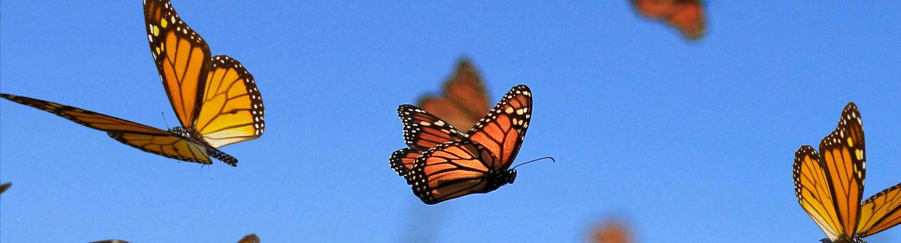

The Lovely butterfly
Due to their bright colors and visits to flowers, butterflies are the most familiar of insects to humans.
Butterflies (and moths) are the only group of insects that have scales covering their wings, although some butterflies have reduced scales.
They differ from other insects also by their ability to coil up their proboscis.
Caterpillars are the names given to the larvae of both butterflies and moths.

They are usually very distinctive, and in some cases may be identified more easily than the adults.
When they are developing, their skin may be shed four or more times, with each molt often changing the coloration and appearance of the caterpillar.
They eat voraciously to transform plant material into tissues that they will need for metamorphosis.
Butterflies are commonly associated with plants, and the relationship is sometimes complex. Immatures, with few exceptions, eat plants, and therefore may be considered harmful to the plants.
However, butterflies are very important to many plants that are dependent upon flower-visiting insects for cross-pollination.
Most butterfly caterpillars eat one, or sometimes several, related species of plants.
Usually the choice is made by the adult female when depositing eggs.
Adults usually feed on nectar from flowers of plants, although many butterflies feed instead on rotting fruit, dung, etc., especially in the tropics.
Butterfly migration is best exemplified by the Monarch, which is widely known to migrate in the fall to overwintering sites in California and Mexico. But in the United States, several other butterfly species engage in lesser migration distances. Some of these are the Buckeye, the Painted Lady, the Purple Wing, the Great Southern White, the Cloudless Sulphur, and the Little Sulphur.
Wing colors in butterflies appear in two types, pigment and structural, frequently combined in one individual. Pigment colors are familiar in paints, dyes, and inks, and are defined as specific substances with definite chemical composition.
Structural colors are instead produced in a physical manner, similar to a rainbow. Morpho butterflies are the usual example of butterflies with structural color.
Vision. The vision of butterflies appears to be excellent, especially within short distances. They are able to fly with precision in areas of many obstacles.
Mating Behavior. Females are usually able to engage in mating on the day of emergence, but males do not normally mate for several days. Courtship rituals vary widely among species.
Classification.
Did You Know?
- Wings Are Transparent.
- Butterflies Taste With Their Feet.
- Butterflies Live on an All-Liquid Diet.
- A Butterfly Must Assemble Its Own Proboscis—Quickly.
- Butterflies Drink From Mud Puddles.
- Butterflies Can't Fly If They're Cold.
- A Newly Emerged Butterfly Can't Fly.
How To Catch A Butterfly?
- sneak up on the butterfly from behind.
- Next, do a quick scoop to surround the butterfly with the net.
- Then, flick the net so it can't escape.
Thank you >.- !